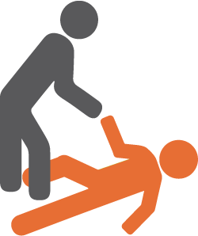
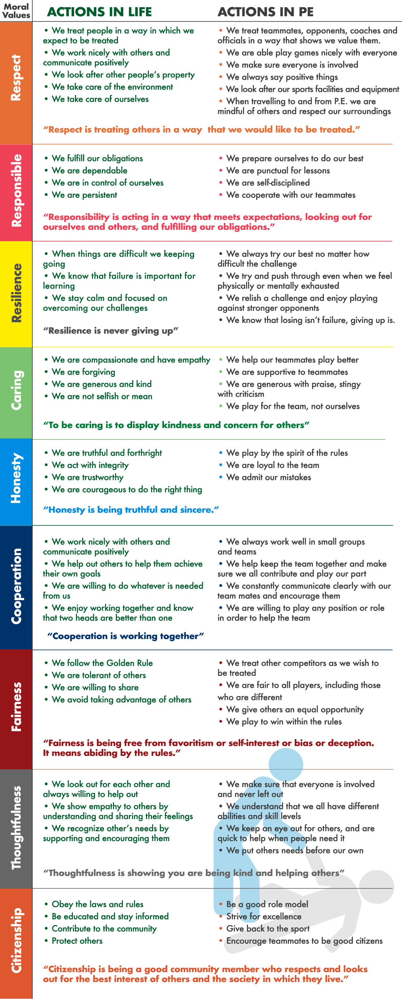
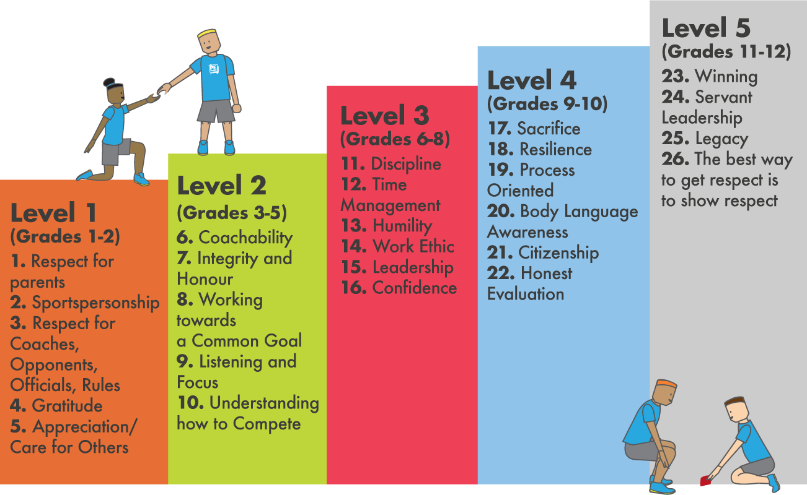

For many years, character (or moral) development has been cited as one of the many benefits of an effective Physical Education program. Essentially, character development is about helping students to become better human beings, as it emphasizes moral traits such as kindness, respect and fairness [1, 2]. Physical education has been recognized as “probably the most significant physical activity context for developing moral character” [3]. Thus, as physical educators we have a huge opportunity to support the development of the whole-student – physically, intellectually, socially, affectively, and possibly even spiritually. This is where terms such as ‘sportspersonship’ and ‘fair play’ come into use, as many PE teachers and sports coaches around the world try urge students to model the behavior expected of participants in sport and physical activity [4].
The first step for implementing a character education program is to create a positive and respectful learning environment. This can come in the form of listed expectations, codes of conduct or behavioral contracts, which can be devised collaboratively with students. These expectations should run in alignment with those of the school and society. Additionally, having routines such as shaking hands with opponents, taking a knee when a player is injured, and celebrating the successes of others will help create a moral classroom environment [2, 6, 7].
If you want to help develop character in your students, you need to demonstrate good character yourself. This doesn’t mean you need to be perfect, we are all imperfect beings that make mistakes. Rather, it is about trying our best to model respect for others, being responsible and organized, being gracious in victory and defeat, showing patience and kindness, admitting and apologizing for our mistakes, and making amends. We are all a work in progress, and sharing our journey will inspire others. Furthermore, you could create learning displays with professional athletes who are role models [2].
This one is simple but important. Teachers must have the courage to challenge students, even their star athletes, when they conduct themselves inappropriately. This doesn’t mean you need to shout out them, or publicly humiliate them. We’re not paid to shout at students. Rather, having an individual conversation with them, asking them why you’ve called them over, and how their decisions impacts others. From there remind them of the expectations, request an apology, thank them for acknowledging their mistake and move on [9].
Create opportunities for students to discuss moral issues in your lessons. This doesn’t need to be a long, arduous process. Rather, create a 2-3-minute window in your lesson for students to talk with a partner or small group about a character trait, or how to handle a particular scenario. This will help students to think about broader issues, for example the need for rules or the qualities of a good teammate. With regards to reflection, have students compare their actions with desired outcomes, skills or behaviors. This will help reinforce positive behaviors, and is crucial for instilling a growth mind-set and emotional intelligence [5, 6, 7].
John Wooden said “what we emphasize gets improved upon” [8]. As physical educators we need to intentionally identify and emphasize the values and moral behavior that we aspire to see in our students. This can be as simple as having a character focal point for each month, week or even lesson, such as “In today’s lesson, we will be exploring ‘Respect’”. Or by taking the initiative and leading an assembly on the qualities of ‘sportspersonship’. From there we need to continually emphasize those traits in our lessons [9].
It is important to recognise, encourage and reward students when they demonstrate good character. As it will motivate others and reinforce the development of those desired traits. Moreover, it is beneficial for students to also recognize positive character traits in others and will help hammer the message home. One simple idea maybe to have a ‘compliment slip’, where students can note down a student that exemplified a moral trait during the lesson [2, 6, 7].
Before teams can experience success, they must first learn how to be good teammates. They must learn how to support each other, praise and encourage one another, and overcome problems and challenges together. This requires purposeful practice through teambuilding activities which should be incorporated at the start of each school year, and revisited periodically to help refresh their cooperative skills [2, 6, 7].
In order to provide ample opportunities to practice moral behavior, students will benefit from taking on a range of different challenges and roles. Thus, try and build up pupils’ independence by incorporating student-centered teaching styles [6].
Last, but by no means least, explain to students about the desired character traits. During childhood, students learn moral values more through observation and imitation. When they enter their teenage years their reasoning abilities develop and they want to know why certain character traits are important. This is when a teacher can provide opportunities to explain and justify moral behaviors and to encourage group discussion, further questions, and reflection.
When deciding on which character traits to emphasize, it is important to carefully consider which is appropriate for their age. Also, it is important to consider cultural implications as the concept of morality can be different based on your geographic location. However, in order to provide a guideline table 1 provides nine fundamental moral values that you can build upon and adapt.
Table 1. Fundamental Moral Values for Physical Education (adapted from Martens, 2012)

For a more detailed outline of age-appropriate character development program, Pete Paciorek’s (2017) book “Character Loves Company: Defining the "Teachable Moments" in Sports” provides five-levels for character values (see table 2).
Table 2. Levels for Character Values (Paciorek, 2017).


As physical education teachers we have a great opportunity to promote, teach, and provide opportunities for students to become better people. This is not about making everyone the same, our personality makes us individuals, but our character makes us better human beings, and helps build a stronger community.


References
- Kirschenbaum, H. (1995) ‘100 ways to enhance values and morality in schools and youth settings. Needham Heights, MA: Allyn & Bacon, pp.26-27.
- Martens, R. (2012) Successful Coaching. 4th Edn. Champaign, IL: Human Kinetics.
- Shields, D.L. & Bredemeier, B.L. (2007) ‘Advances in Sport Morality Research’ In Tenenbaum, G. & Eklund, R.C (eds.) Handbook of Sport Psychology. Third Edition. John Wiley & Sons: Hoboken, New Jersey.
- Gibbons, S.L & Ebbeck, V. (1997) ‘The effect of different teaching strategies on the moral development of physical education students’. Journal of Teaching in Physical Education, 17, 85-98.
- Farrant, D. (2013) Character Development through Physical Education: Measuring the Effectiveness of a Curriculum-Based Programme in Primary Schools.
- Watson, D.L. & Clocksin, B.D (2013) Using Physical Activity and Sport to Teach Personal and Social Responsibility. Champain, IL: Human Kinetics.
- Anderson, L. & Glover, D.R. (2017) Building Character, Community, and a Growth Mindset in Physical Education: Activities that promote learning and emotional and social development. Champaign, IL: Human Kinetics.
- Wooden, J. & Jamison, S. (1997) Wooden: A lifetime of observations and reflections on and off the court, New York: McGraw-Hill.
- Paciorek, P. (2017) Defining the Teachable Moments in Sports – A guidebook to character literacy development. Florida: Character Loves Company.